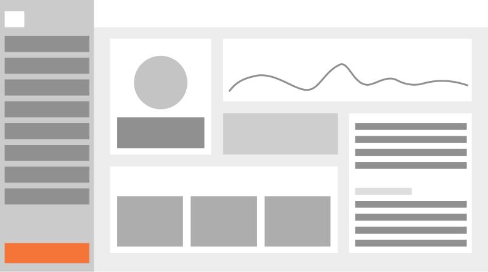

Option 1: A dedicated dashboard
Our first direction was to create a dedicated dashboard where marketers could monitor the level of manipulative language across campaigns and receive a periodic score.
Why we moved away from it:
This concept raised more questions than it solved within the existing workflow. How would marketers maintain their score? What would motivate regular engagement? Furthermore, could encouraging additional messages just to grow audience reach create another form of unwanted communication?
We realized we shouldn't solve one dark pattern by introducing another.